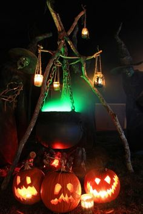

Autumn is here! The leaves are losing their chlorophyll, animals are getting fat for winter, and children are looking forward to the end of the month when it’s culturally acceptable to stuff their faces with candy. It is a time of transition, tradition and festive fun. There is so much history and biology to the season of Autumn and that is exactly what this post will be about. If you have ever been curious how different animals have adapted to survive the winter or wondered why we avoid black cats around Halloween, this post will tell you!Autumn is a time of change. It is a time of the harvest and plenty. In fact prior to the 14th century, the season was just known as “harvest” or was not recognized at all as most cultures around the world only recognized summer and winter. It wasn’t until the 17th century that the term “Fall” came into use, now primarily in the United States and is believed to have been named to poetically complement it’s opposite season, Spring.We owe our seasons to the tilt of Earth’s axis. That 23.5 degree tilt allows one hemisphere to be angled towards the sun (summer) and the other to be angled away (winter). The times between these direct tilts are our transition seasons, Spring and Autumn/ Fall. These times are also called Equinoxes and are when the times of night and day are nearly equal. In fact the word Equinox comes from the Latin words Aequus meaning “equal” and Nox meaning “night”.
The lack of sunlight and temperature drop experienced in Autumn are the reasons behind the beautiful foliage that the north east is known for. It is actually a survival technique that the trees had developed to prepare themselves for winter to survive. In the spring and summer, when it is warm and there is lots of sunlight, plants produce chlorophyll. This chemical is used to split water molecules within the plant into Hydrogen and Oxygen atoms to make glucose for the plant. It is also what gives plants their green color. Chlorophyll is sensitive to cold so when Autumn comes around trees stop producing chlorophyll to save energy and so they lose their green color. The colors that we see in Autumn are actually caused by pigments found underneath the chlorophyll. Trees that turn yellow or orange such as birches, beech and some oaks have carotenoids, the same pigment that gives carrots their color. Reds and purples of other trees such as red maples come from anthocyanins, a pigment also found in apples and strawberries.
Plants aren’t the only ones adapted to survive the dropping temperatures. Animals that live in places like New Hampshire that experience these changes have to be adapted to survive. Autumn is a time of preparing for the coming winter and that can be done in a variety of ways. Some animals like birds, some bats, whales and insects will migrate to warmer places where food may be more abundant. Migration is often referred to as “going south” for the winter but it can actually be a movement south, east, west or even just a change in elevation. Some animals migrate incredible distances. The Arctic Tern spends its summers at the North pole and migrates all the way down to Antarctica for the winter and back again every year. In the North East our monarch butterflies spend summers here and in Canada and will migrate down to Mexico for the winter.Animals that don’t have the ability to leave to avoid the colder temperatures have developed a variety of ways to survive the winter. Bears are commonly believed to hibernate but they actually do what is called denning. Denning differs from hibernation in that it is only a light form of dormancy and animals that den can wake up during the winter. When denning, a bear’s body temperature will not drop as low as a true hibernators but it will lose significantly more body weight. This means bears have to put on much extra fat during the fall in order to survive the winter. Because it is a lighter form of dormancy bears can wake up during the winter, however this can decrease their chances of survival. Female black bears will give birth and suckle their young while denning. True hibernators include animals like chipmunks, mice, reptiles and amphibians. These animals experience a large drop in body temperature and are asleep for the whole winter. They also need to build up a layer of fat in order to survive. Some animals that don’t migrate, hibernate or den for the winter have developed physical or behavioral adaptations for winter. Animals such as gray foxes change their diets to what food is available for the season. Gray foxes are omnivorous, eating both plant and animal matter. In the summer and fall when vegetation, nuts, and berries are plentiful, that is what they will feed on. When those food sources are gone in winter, they will switch to eating meat such as small mammals and birds. This behavioral adaptation allows the fox a wider variety of food sources and so is more likely to survive.
The snow-shoe hare and short-tailed weasel are two New Hampshire residents with mirrored physical adaptations for winter. They have the relationship of predator (weasel) and prey (hare). In the summer, both sport a brown (in the case of the weasel, brown and white) fur coat. Both are used for camouflage with the hare attempting to hide from predators and the weasel attempting to blend in to better hunt its prey. In the winter, both species grow new white coats for the same purposes.
While Autumn is the time to prepare for the coming winter for animals, for us humans it is a time for celebrating. Various cultures around the world have holidays and festivals in Autumn. “Autumn, or fall, is rich with different festivals which mainly celebrate the return of light, harvest, and, like spring, rebirth through death. Harvest celebrations tend to combine giving thanks with prayers for future abundance, to propitiate the god(s) and ensure successful crops” (Cristina De Rossi, an anthropologist at Barnet and Southgate College in London). In Mexico on November 2, Dia de los Muertos (The day of the dead) is celebrated with parties, flowers, and traditional food to honor the dead. The day before, on November 1, Catholics celebrate All Saints Day by bringing flowers to the graves of loved ones. And of course on the last day of October in the United States, Halloween is celebrated with costumes, bobbing for apples and trick-or-treat. Halloween has been celebrated in the US since the time of the colonies and previously by the Celts 2,000 years ago. The holiday has changed much over the millennia and some of of the Halloween activities celebrated 2,000 years ago are still enjoyed today.
 Halloween first began as the holiday of Samhain, which the Celts celebrated as the beginning of the new year on November 1. This day marked the end of summer and the beginning of winter. This day was also associated with death since winter was a dark and cold time that some did not survive. On this day, the Celts believed that the boundary between our world and the spirit world became blurred and that spirits could return. Spirits were blamed for bad crops and other mysterious happenstances around this time but the Celts also believed this was a time when their priests, known as Druids, could make important prophecies for the coming year. These prophecies could be ill omens of sources of comfort during the long cold winter. Activities to celebrate Samhain included building huge sacred bonfires, dressing in costumes made of animal skins and telling fortunes.When to Romans conquered Celtic lands in 43 A.D. traditional Roman festivals combined with Samhain. The Romans also celebrated a day late in October to honor the dead and the goddess of fruit and trees, Pomona. Pomona’s symbol was the apple and it is believed that our tradition of bobbing for apples on Halloween came from the combining of this Roman holiday with Samhain. In 1000 A.D. after Christianity had moved to Celtic lands the Catholic church named November 2 All-Souls Day. Similar to Samhain, this day was celebrated with parties, bonfires and people wearing costumes of angels and devils. All-Souls Day was also called All-Hallows or All-Hallowsmas. The day before, the traditional day of Samhain to the Celts, became later known as All-Hallows eve and eventually Halloween.
Later Halloween came to Colonial America but was very limited in it’s celebrations due to strong Protestant beliefs. When it arrived the beliefs of various European cultures and that of the Native Americans mixed into what is similar to the Halloween we celebrate today. One of the first traditions were known as “play-parties” which were large public gatherings where people would sing, dance, tell ghost stories and read fortunes. Festivals at this time of year were common by the mid 19th century but it wasn’t until a few decades later when Irish fleeing from the potato famine came to America and popularized Halloween all over the country.
In the late 1800’s people wanted Halloween to be a more family oriented and child friendly event. So instead of parties focused on witchcraft and spirits, people would have large community parties where families would play games, eat seasonal food, and dress in costume. By the 1950’s Halloween had become mainly focused around children mainly due to the 50’s baby boom. Celebrations moved from town centers to classrooms and at home. The tradition of Trick-or-treat arose from when adults would give out treats to neighborhood children so as not to be pranked.Halloween is a time of superstition and magic. It’s when we are especially careful to avoid sources of bad luck. The story of black cats becoming a part of Halloween comes from the middle ages. It was believed that to avoid capture, witches would transform themselves in black cats and bring bad luck to those who crossed their path. Salt was believed to keep away bad spirits and spilling salt was deemed unlucky.There is certainly a magic to the season of Autumn, whether or not you believe in witches and ghosts. A time when the very trees prepare to sleep and the breeze bears the birds to fairer skies. It is certainly one of my favorite times of year to spend with family and friends picking apples, carving pumpkins and enjoying the foliage. However you celebrate the season, Happy Fall!